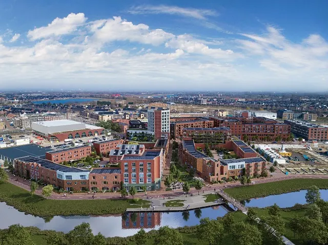

Nieuws ·
Start bouw 2e fase hart van de Waalsprong in Nijmegen
Dit bericht uit ons archief verscheen op 26 juni 2023 op NieuwsNijmegen.nl. Data, tijden en prijzen kunnen inmiddels anders zijn.
Met het plaatsen van een prefab betonnen binnenblad door een bouwkraan is donderdagmiddag het startsein gegeven voor de bouw van de tweede fase van Hart van de Waalsprong in Nijmegen. Deze tweede fase omvat 101 energieneutrale woningen met bijzondere architectuur in Front, Hosta en Iberis. Hendriks Bouw en Ontwikkeling realiseert de woningen, voor de ontwikkelcombinatie Hart van de Waalsprong, een samenwerking van gebiedsontwikkelaars AM en VanWonen.
Tijdens een feestelijke bijeenkomst in het café van sporthal De Boog werden de toekomstige bewoners gefeliciteerd door wethouder Noël Vergunst: “Het tweede centrum van Nijmegen krijgt nu steeds meer vorm en kleur. Zo bouwen we de woningen waar we in Nijmegen zo’n behoefte aan hebben. In een levendige en plezierige omgeving met veel voorzieningen binnen handbereik. Ik feliciteer alle bewoners hier alvast met hun nieuwe en duurzame woning.”
René Steman, projectdirecteur Hart van de Waalsprong voegt daaraan toe: “Wij zijn blij dat we nu starten met de bouw van de 2e fase van Hart van de Waalsprong. Dit wordt voor onze klanten een zeer aantrekkelijke woon- en winkelomgeving. Met veel aandacht voor bijzondere architectonische details, en met de focus op een gezonde leefomgeving waar vele generaties plezierig gaan wonen.”
Front, Hosta en Iberis
Front is een appartementengebouw dat gerealiseerd wordt boven een aantal winkels. Hier komt een gevarieerd aanbod van 2-, 3- en 4-kamer-appartementen. Het door Monadnock architecten ontworpen Front kenmerkt zich door de 10 verdiepingen tellende toren die op de hoek van het gebouw boven het plein van Hart van de Waalsprong uitsteekt. In Front worden in totaal 32 koopappartementen gerealiseerd. Het plan voor Hosta en Iberis omvat69 grondgebonden, energieneutrale woningen. De woningen variëren in grootte van circa 121 m2 tot 194 m2. Bijzonder aan dit deelplan is de grote variëteit in architectuur. Vier architectenbureaus tekenden voor Hosta en Iberis: Monadnock, BRINK, Level of Detail en Korthtielens.
Ronald van Dielen, directeur Hendriks Bouw: “Wij gaan hier prachtige duurzame woningen en appartementen realiseren. Met een grote diversiteit in architectuur en met veel aandacht voor details. Zo dragen we bij aan het creëren van duurzame leefomgevingen.”

Duurzaam en comfortabel wonen
Bij de ontwikkeling van de woningen en appartementen Hart van de Waalsprong is aandacht besteed aan de toekomst. Duurzaamheid en comfort spelen een grote rol. Alle woningen zijn gasloos en voorzien van vloerverwarming (stadsverwarming) en is er sprake van een balans-ventilatie-systeem met warmteterugwinning. Zonnepanelen leveren een bijdrage aan het terugdringen van de kosten van het stroomverbruik. Er is ook aandacht voor een gezonde en groene leefomgeving. Zo beschikt Front over een daktuin. En regenwater wordt niet geloosd via de riolering maar geïnfiltreerd in de grond.
Beschikbare woningen en planning
De oplevering van de grondgebonden woningen Hosta en Iberis start vanaf het eerste kwartaal van 2024. De oplevering van de appartementen Front start na de zomer van 2024. Er zijn nog enkele woningen en appartementen beschikbaar. Het actuele beschikbare aanbod is te vinden op www.hartvandewaalsprong.nl.
Hart van de Waalsprong
Hart van de Waalsprong ligt in de wijk Hof van Holland. De nieuwste wijk van Nijmegen-Noord is gunstig gelegen tussen Spiegelwaal, Graaf Alardsingel en spoorlijn. Hart van de Waalsprong vormt, zoals de naam al aangeeft, hét woon- en winkelhart van de Waalsprong. De bereikbaarheid is goed, zowel met de auto, fiets en het OV (station Lent ligt op loopafstand). Naast het winkelcentrum komen in Hart van de Waalsprong 504 koop- en huurwoningen (waarvan 101 sociale huurappartementen) en ruim 30 winkelunits met diverse gezellige horecagelegenheden. De nieuwe stadswijk heeft een uitgesproken karakter door zichtbare duurzaamheid, door water en groen en spannende stedelijke architectuur.
De eerste bewoners van Hart van de Waalsprong hebben vanaf eind oktober de sleutel van hun nieuwe huis ontvangen. Ook het architectonisch bijzonder vormgegeven parkeerhuis met zonnedak, wat een groot deel van de wijk van duurzaam opgewekte energie gaat voorzien, is inmiddels in gebruik genomen. Het eerste deel van het winkelcentrum wordt eind 2023 opgeleverd. De tweede fase is in 2024 gereed.